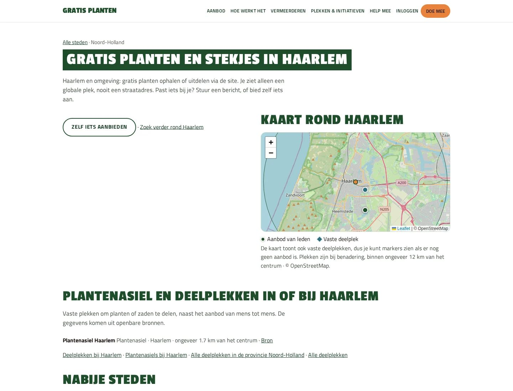
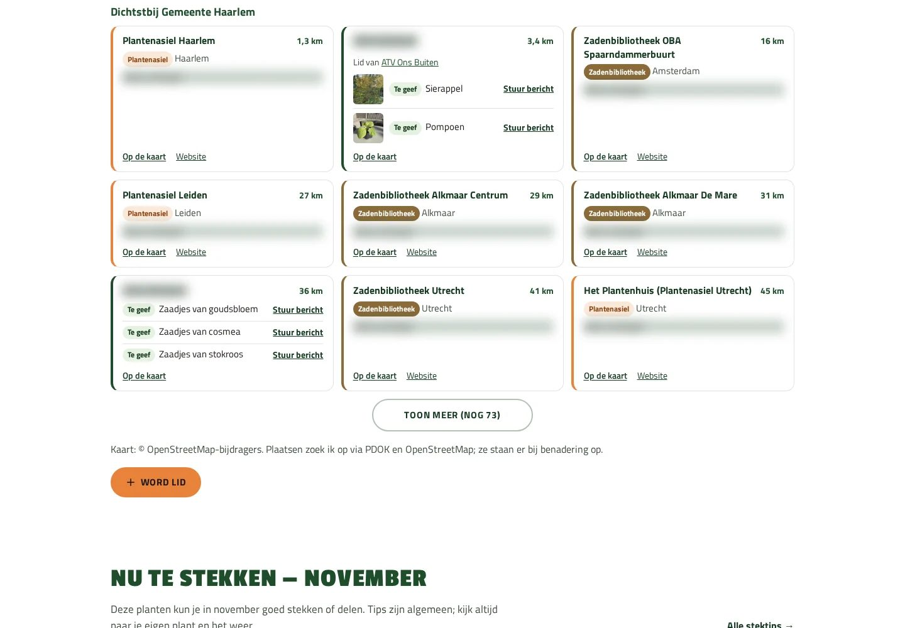
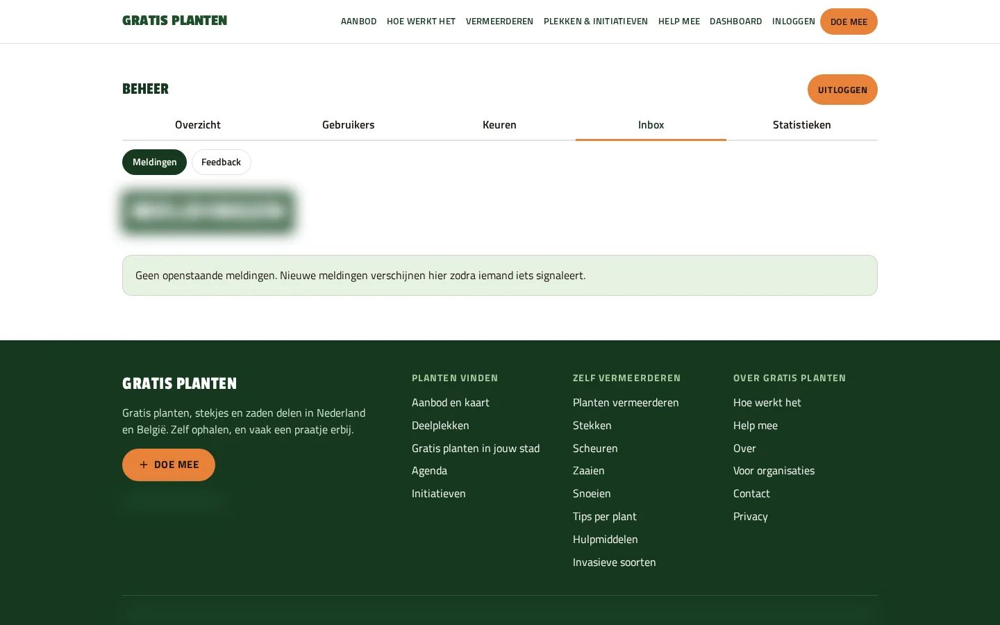

Case
Gratis planten
Een plek waar buurtgenoten gratis stekjes, planten en zaden aan elkaar weggeven. Gratis planten is mijn eigen initiatief: ik bedacht, bouwde en lanceerde het platform, en zorg er sindsdien voor dat steeds meer mensen meedoen.


Vraag
Hoe zorg je dat mensen in de buurt echt iets gaan delen?
Veel mensen hebben een stekje over of zoeken er een. Ze moeten elkaar alleen kunnen vinden. Een informatieve website is dan niet genoeg: bezoekers moeten binnen een paar seconden zien wat er bij hen in de buurt te halen is, de gever een bericht kunnen sturen en zonder gedoe zelf iets aanbieden.
Daarom begon ik bij die drie handelingen: zoeken, contact opnemen en aanbieden. Alles wat daar niet direct aan bijdroeg, kwam later of helemaal niet.
Resultaat
Tien keer zoveel bezoek in de eerste week
Op de eerste dag (30 oktober) bekeken bezoekers 153 pagina’s. Zes dagen later, op 5 november, waren dat er 1.527. Tot 9 november kwamen er 38 aanmeldingen binnen. Bron: eigen statistieken van Gratis planten, gemeten op 9 november 2026.
Wat het doet
Voor wie is het, en wat kunnen ze?
Bezoekers
- Op postcode of plaats zoeken naar gratis stekjes, planten en zaden in de buurt.
- Op een kaart zien waar aanbod is, en waar vaste deelplekken zitten zoals zadenbibliotheken en plantenasiels.
- In de agenda stekjesmarkten en ruilbeurzen vinden, en stektips per plant lezen.
Leden
- Snel een gratis account maken: alleen e-mail, wachtwoord en postcode.
- Iets aanbieden met een paar foto’s, en via de site berichten sturen aan andere leden.
Verenigingen en initiatieven
- Een eigen pagina voor initiatieven zoals Struikroven en de STEKchallenge.
- Posters en flyers om te printen, met een QR-code naar de site, en een aparte pagina voor tuinverenigingen.
Beheer
- Een beheerscherm om nieuwe deelplekken en verenigingen te controleren voordat ze online komen.
- Overzicht van bezoek en aanmeldingen, en waar bezoekers afhaken op weg naar hun eerste aanbod.
Bewuste keuzes
- Geen advertenties of betaalmodel: het platform is gratis en blijft dat.
- Bezoek wordt geteld zonder IP-adressen op te slaan, en locatiegegevens worden uit foto’s gehaald.
- Een pagina per plaats komt er pas als daar echt iets te halen is, niet om zoekmachines te vullen.
Schermen
Zo ziet het eruit
Een selectie uit de site en het beheer. Persoonsgegevens zijn onleesbaar gemaakt.
-

Statistieken: bezoek en aanmeldingen -

Van bezoeker tot eerste aanbod, per week -

Aanbod en deelplekken rond Haarlem -
Deelplekkenkaart Nederland en België -

Stadspagina Haarlem -

Zoekresultaten met aanbod -

Beheer: ledenlijst -

Beheer: meldingen

Aanpak
Klein beginnen, dan elke dag bijsturen
Ik zette eerst een werkende basis live en keek daarna wat bezoekers echt deden. Op basis daarvan kwamen er in negen dagen 71 kleine verbeteringen live. Een paar stappen uit die eerste twee weken:
- Dag 1 — Zoeken, aanbieden en de eerste pagina’s per plaats.
- Dag 3 — Heel België erbij, met Belgische postcodes en deelplekken.
- Week 1 — Stektips, posters om te printen en pagina’s voor initiatieven.
- Week 2 — Per Facebook-bericht zien hoeveel bezoek het oplevert, en een pagina voor tuinverenigingen.
Stand op 9 november 2026:
- 9.038 bekeken pagina’s in de eerste elf dagen.
- 38 aanmeldingen en 10 nieuwe aanbiedingen.
- 100 pagina’s per plaats, waarvan 53 vanzelf zijn ontstaan omdat er aanbod of een deelplek bij kwam.
- 36 artikelen met stektips en uitleg.
- Steeds meer deelplekken in Nederland en België; elke week komen er nieuwe bij.
AI
AI als hulpmiddel, ik houd de regie
AI helpt me bij werk dat anders veel tijd kost: berichten voor Facebook opstellen, mails naar tuinverenigingen voorbereiden, antwoorden op binnenkomende mail klaarzetten en de site testen. Alles wat naar buiten gaat of live komt, controleer en keur ik zelf goed.
Samenwerken
Wat heb jij hieraan?
Wil je dat mensen op je website zelf iets doen, zoals zich aanmelden, iets aanbieden of elkaar vinden? Dan werk ik op dezelfde manier:
- Eerst een eenvoudige versie die werkt, in plaats van maanden wachten op alles tegelijk.
- Kijken wat bezoekers echt doen, en daarop bepalen wat als volgende komt.
- Privacy en beheer vanaf het begin goed geregeld.
- Na de lancering blijf ik betrokken en aanspreekbaar.
Elk project heeft een eigen tempo. Dit traject laat zien hoe ik werk, het is geen belofte dat elk project in negen dagen staat.
Herkenbaar?
Wil jij dat mensen gaan meedoen?
Vertel me wie er moet meedoen en wat ze op je site moeten kunnen. Dan kijk ik samen met je wat de eenvoudigste eerste versie is.